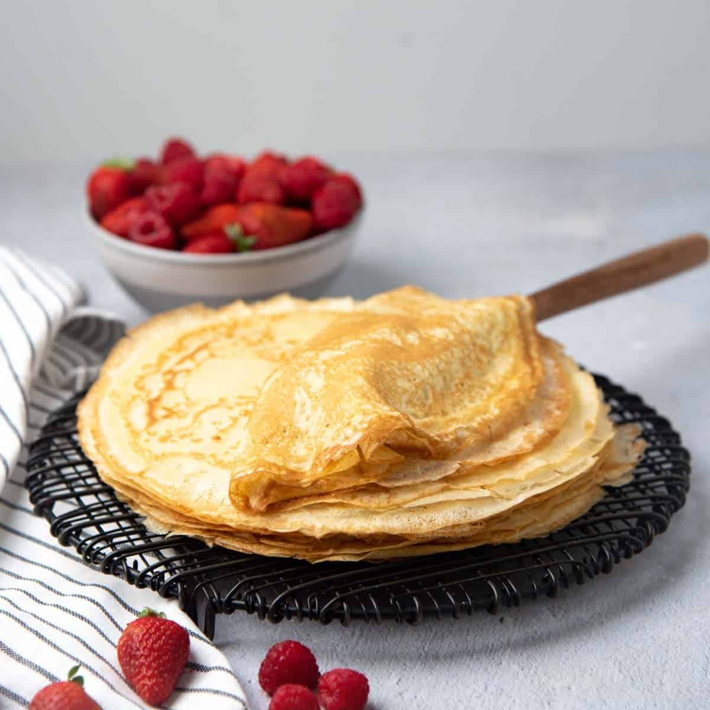

French crêpes

Simple and efficient!
French crêpes are good for weekend breakfasts, or even for desserts. Serve rolled up and filled with jam or fruit and
whipped cream.
Ingredients
- 1 cup all-purpose flour
- 1 teaspoon white sugar
- ¼ teaspoon salt
- 3 eggs
- 2 cups milk
- 2 tablespoons butter, melted
Steps
- Sift flour, sugar, and salt into a bowl; set aside. Beat eggs and milk together in a large bowl with an electric mixer.
Beat in flour mixture until smooth; stir in melted butter.
- Lightly grease a griddle or frying pan; heat over medium-high heat.
- Pour or scoop the batter onto the griddle, using approximately 2 tablespoons for each crêpe. Immediately rotate the
skillet to spread batter out in a thin layer. Cook until the top of the crêpe is no longer wet and the bottom has
turned light brown, 1 to 2 minutes. Shake the pan or loosen with a spatula; turn or flip it over and cook until other
side has turned light brown, about 1 minute more. Repeat with remaining batter.